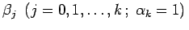
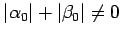
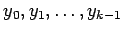
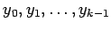

Mehrschrittverfahren
Das EULERsche Polygonzugverfahren (19.97) und das RUNGE-KUTTA-Verfahren (19.99) stellen sogenannte Einschrittverfahren dar, da sie bei der Berechnung von yi+1 nur auf das Ergebnis yi des vorangegangenen Schrittes zurückgreifen. Allgemeine lineare Mehrschrittverfahren sind dagegen von der Form
mit geeignet gewählten Konstanten und . Die Vorschrift (19.101) wird als k-Schrittverfahren bezeichnet, falls  ist. Es heißt explizit, falls ist, weil dann in den Werten fi+j = f(xi+j,yi+j) der rechten Seite von (19.101) nur die bereits bekannten Näherungswerte  auftreten. Ist
auftreten. Ist  , so heißt das Verfahren implizit, da dann der gesuchte neue Wert yi+k auf beiden Seiten von (19.101) auftritt. Bei der Anwendung eines k-Schrittverfahrens ist die Kenntnis von k Startwerten  notwendig. Diese verschafft man sich z.B. mit Hilfe eines Einschrittverfahrens.
, so heißt das Verfahren implizit, da dann der gesuchte neue Wert yi+k auf beiden Seiten von (19.101) auftritt. Bei der Anwendung eines k-Schrittverfahrens ist die Kenntnis von k Startwerten  notwendig. Diese verschafft man sich z.B. mit Hilfe eines Einschrittverfahrens.
Spezielle Mehrschrittverfahren zur Lösung der Anfangswertaufgabe (19.93) kann man dadurch gewinnen, daß man in (19.93) die Ableitung y'(xi) durch Differenzenformeln ersetzt oder in (19.95) das Integral durch Quadraturformeln approximiert.
Beispiele für spezielle Mehrschrittverfahren sind:
- 1. Mittelpunktsregel:
- Die Ableitung y'(xi+1) in (19.93) wird durch die Sekantensteigung bezüglich der Stützstellen xi und xi+2 ersetzt. Man erhält:
- 2. Verfahren von Milne:
- Das Integral in (19.95) wird durch die SIMPSON-Formel approximiert. Man erhält:
 |
(19.103) |
- 3. Verfahren von Adams-Bashforth:
- Der Integrand in (19.95) wird durch das
Interpolationspolynom vonLAGRANGE bezüglich der k Stützstellen
ersetzt. Man integriert zwischen xi+k-1 und xi+k und erhält:
Das Verfahren (19.104) ist explizit bezüglich . Zur Berechnung des Koeffizienten s. Lit. 19.1.